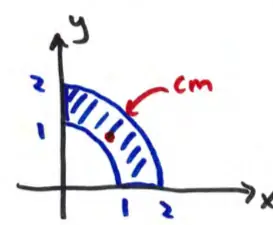
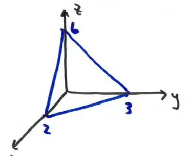
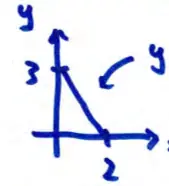

Consider a region $R$ between circles of radii 1 and 2 centered at the origin in the first quadrant (QI) with density:
\[ \rho(x, y) = \sqrt{x^2 + y^2} \]
Since these are circles, let's set up the problem in polar coordinates:
\[ R = \{ (r, \theta) : 0 \le \theta \le \frac{\pi}{2}, \quad 1 \le r \le 2 \} \]
Density in polar coordinates: $\rho = r$.

Figure: Graph of a quarter-annulus in the first quadrant between r=1 and r=2, with center of mass marked.
1. Calculate Total Mass ($m$)
\[ m = \iint_R \rho \, dA = \int_0^{\pi/2} \int_1^2 r \cdot r \, dr \, d\theta = \int_0^{\pi/2} \int_1^2 r^2 \, dr \, d\theta = \dots = \frac{7\pi}{6} \]
2. Calculate Center of Mass Coordinates
Using $x = r \cos \theta$ and $dA = r \, dr \, d\theta$:
\[ \bar{x} = \frac{1}{m} \iint_R x \rho \, dA = \frac{1}{7\pi/6} \int_0^{\pi/2} \int_1^2 r \cos \theta \cdot r \cdot r \, dr \, d\theta = \dots = \frac{45}{14\pi} \approx 1.023 \]
Using $y = r \sin \theta$:
\[ \bar{y} = \frac{1}{m} \iint_R y \rho \, dA = \frac{1}{7\pi/6} \int_0^{\pi/2} \int_1^2 r \sin \theta \cdot r \cdot r \, dr \, d\theta = \dots = \frac{45}{14\pi} \approx 1.023 \]
PAGE 7
Transition from 2D to 3D
When moving from 2D to 3D, we transition from area elements to volume elements:
\( dA \to dV \) and density functions
\( \rho(x, y) \to \rho(x, y, z) \).
Consequently, double integrals become triple integrals.
Mass and Center of Mass Formulas in 3D
\[ m = \iiint_{D} \rho(x, y, z) \, dV \]
\[ \bar{x} = \frac{1}{m} \iiint_{D} x \rho(x, y, z) \, dV \]
\[ \bar{y} = \frac{1}{m} \iiint_{D} y \rho(x, y, z) \, dV \]
\[ \bar{z} = \frac{1}{m} \iiint_{D} z \rho(x, y, z) \, dV \]
PAGE 8
Example: Center of Mass of a Solid
Find the center of mass of a solid bounded by \( 3x + 2y + z = 6 \) and the coordinate planes, with density
\( \rho(x, y, z) = 1 + x \).
The bounding surface is a plane in the first octant.

Figure: 3D graph of a tetrahedron in the first octant bounded by axes and a plane with intercepts (2,0,0), (0,3,0), (0,0,6).
Plane Equation:
\( 3x + 2y + z = 6 \)
Setting up the Integrals
For the integrals, let's use the \( xy \)-plane as the "floor".

Figure: 2D projection on the xy-plane showing a triangle with vertices at (0,0), (2,0), and (0,3).
Region in \( xy \)-plane:
\[ 0 \le x \le 2 \]
\[ 0 \le y \le 3 - \frac{3}{2}x \]
Limits for \( z \)
For \( z \), from the \( xy \)-plane to the bounding plane:
\( 0 \le z \le 6 - 3x - 2y \)
Calculating Mass
\[ m = \int_{0}^{2} \int_{0}^{3-\frac{3}{2}x} \int_{0}^{6-3x-2y} (1+x) \, dz \, dy \, dx = \dots = 9 \]
Note: \( \rho = (1+x) \) and \( dV = dz \, dy \, dx \).